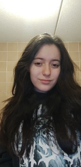

over Go-It
| Naam | Mike de Gunst |
|---|---|
| Geboorte datum | 26-08-1999 |
| mike.degunst@student.aventus.nl | |
| Functie | Scrum Master |
| Afdeling | ICT Support |
Hallo,
Mijn naam is Mike de Gunst
Ik heb verstand van:
Basis programmeren
Basis web development
De 2e wereldoorlog
Ik ben niet zo goed in:
Leidinggeven
Mijn hobby's zijn:
Gamen, en leren/lezen over bepaalde geschiedenis tijdperken
| Naam | Dion Sorel |
|---|---|
| Geboorte datum | 06-08-1999 |
| dion.sorel@student.aventus.nl | |
| Functie | Hard en Software specialist |
| Afdeling | ICT Support |
Hallo,
Mijn naam is Dion Sorel
Ik heb verstand van:
Hard en Software,
Servers,
OSI Model,
Front-End development,
Back-End development,
Reverse Engineering van game executables
Ik ben niet zo goed in:
Sociale interacties, uitleggen
Mijn hobby's zijn:
Gamen, applicaties ontwikkelen, servers bijhouden.
| Naam | Darian Klappe |
|---|---|
| Geboorte datum | 01-05-2006 |
| darian.klappe@student.aventus.nl | |
| Functie | Office specialist |
| Afdeling | ICT support |
Hallo,
Mijn naam is Darian.
Ik heb verstand van:
Microsoft office, Gimp en Windows Installatie.
Ik ben niet zo goed in:
Bereikbaar zijn.
Mijn hobby's zijn:
VR games spelen en muziek luisteren.
| Naam | Daniël Groothuis |
|---|---|
| Geboorte datum | 19-10-2003 |
| daniel.groothuis@student.aventus.nl | |
| Functie | Website developer |
| Afdeling | ICT support |
Hallo,
Mijn naam is Daniël.
Ik heb verstand van:
Electro kabels
HTML & WordPress websites
GitHub
Game servers
Basis programmeren
Ik ben niet zo goed in:
Rekenen en Spelling
Mijn hobby's zijn:
Gamen, Manga lezen, Anime kijken en naar de sportschool gaan.

| Naam | laura van Houttum |
|---|---|
| geboorte datum | 26-09-2006 |
| laura.vanHouttum@student.aventus.nl | |
| Functie | - |
| Afdeling | ICT support |
Hallo,
Mijn naam is Laura.
Ik heb verstand van:
Word
Basis programmeren phython
Basis web-development html & wordpress
Ik ben niet zo goed in:
Op tijd komen, presenteren
Mijn hobby's zijn:
Gamen, netflix kijken, met mijn katten spelen